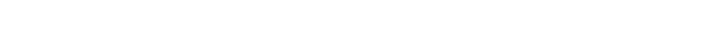

-

KEYOPS
PLATFORM
keyup은 게임 및 증강 현실(AR) 경험과 같은 매력적이고 몰입감 있는 제품을 제작함으로써
양방향 미디어의 사고 리더입니다. 최신 기술과 기법을 활용함으로써 keyup은 고객의 아이디어를 새롭고
혁신적인 방식으로 실현할 수 있으며 청중이 콘텐츠에 참여할 수 있는 독특하고 상호 작용적인 방법을 제공합니다.
캐주얼 모바일 게임이든 복잡한 AR 설치물이든 Scissor Films는 인터랙티브 프로젝트를 실현할 수 있는 기술과 전문성을 갖추고 있습니다


USED STACK
DEVELOPMENTS
AND
ISSUES
- 인터랙티브 콘텐츠 스토리 기획 및 IP 라이브러리 축적
- Real Time Engine (Unreal, Unity) 을 활용한 콘텐츠 개발
- 온 오프라인 플랫폼을 통한 유통 서비스
- VR/AR/XR/메타버스 구현을 위한 기술 R&D 전시·관람형 및 디지털 헤리티지 실감콘텐츠 개발
- 박물관, 전시관 등 특수 공간을 위한 실감형 영상 기획 및 제작
- 홀로그램, 프로젝션 맵핑, 미디어파사드 등 미디어아트 구현
- 국내외 주요 문화유산 보존/복제를 위한 디지털 헤리티지 구축
- 3D 스캔 통한 디지털 라이징 및 다양한 문화유산 실감콘텐츠 개발